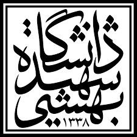

Shahid Beheshti University
Completed the undergraduate programme in Computer Engineering with a strong focus on Embedded Systems and the Internet of Things. Enrolled in a graduate-level project on connected homes at the Cyber-Physical Systems Lab alongside the program.
GPA: 16.87 / 20.0 (3.37 / 4.0 on U.S. Scale)
Volunteer Teaching Assistantship: